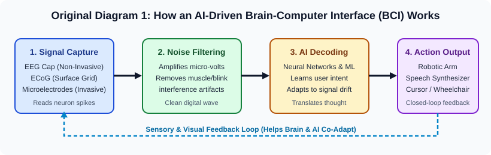
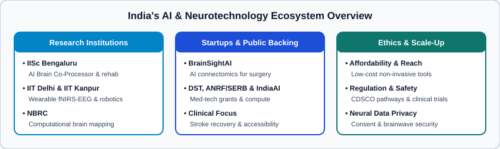

Innovation, Medical Applications, and Emerging Neurotechnology in India
Brain-Computer Interfaces (BCIs) allow people to communicate or control external machines directly using brain activity. With recent breakthroughs in Artificial Intelligence (AI), computers can decode complex neural patterns much faster and more accurately than ever before—helping paralyzed patients speak, move robotic limbs, and recover from strokes.
Below are two original diagrams we created to explain the global AI-BCI signal processing pipeline and India's growing neurotechnology ecosystem:

Figure 1: Original diagram of the 4-stage closed-loop AI-BCI pipeline (created by Bachitar Singh & Sahilpreet Singh).

Figure 2: Original infographic summarizing India's BCI research institutes, startups, and ethical challenges.
Use the side-by-side interactive frames below to compare Global AI-BCI Trends with Developments in India, or open either page directly using the links in each header.
This embedded frame demonstrates JavaScript arrays, loops, functions, conditional (if-else) logic, interactive textboxes/buttons, HTML5 canvas animation, and synthesized audio feedback.
Listen to a simulated neural calibration tone generated directly in your browser, or explore external research portals below:
All website code (HTML, CSS, JavaScript) and diagrams (bci_pipeline.svg and india_bci_infographic.svg) were created by Sahilpreet Singh (815334) and Bachitar Singh (816415) for CSCI 101. Research facts were synthesized from the following public sources: